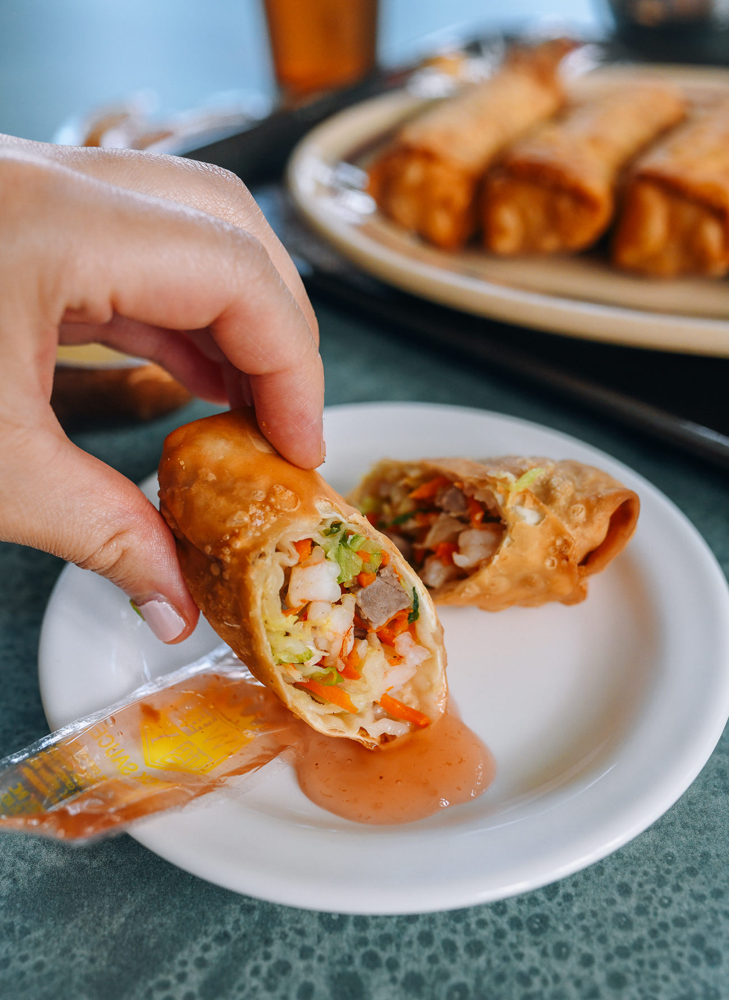

Copycat Take-out Egg Rolls
Description
Egg rolls are the quintessential Chinese takeout food. Here's our family's restaurant recipe—a 100% accurate, easy-to-follow egg roll recipe to make at home!
Ingredients
- 16 cups Taiwanese cabbage or green cabbage or savoy cabbage (shredded)
- 2 cups carrot (shredded)
- 2 cups celery (shredded or finely chopped)
- 3 scallions (chopped)
- 2 1/2 teaspoons salt
- 2 teaspoons sugar
- 1 tablespoon sesame oil
- 2 tablespoons peanut, vegetable, or canola oil (plus more for frying)
- 1/4 teaspoon five spice powder (optional)
- 1/4 teaspoon white pepper
- 3 cups roast pork (char siu, shredded or diced)
- 2 cups cooked shrimp (chopped, optional)
- 1 package egg roll wrappers (about 24 pieces)
- 1 egg (beaten)
Steps
- Bring a large pot of water to a boil. Put the cabbage, carrots, and celery into the boiling water and cook for about 2 minutes. Transfer the veggies to an ice bath and drain. Thoroughly squeeze out all the excess water from the vegetables (you can put the drained veggies in a clean kitchen towel and squeeze out the water). This is a very important step because if the filling is too wet, you will have a wet filling and soggy egg rolls!
- Once dry, transfer the veggies to a large mixing bowl. Add the scallions, salt, sugar, sesame oil, 2 tablespoons oil, five spice powder (if using), white pepper, roast pork, and cooked shrimp (if using). Toss everything together. The filling is ready to be wrapped!
- To wrap the egg rolls, take a small fistful of filling, squeeze it a little in your hand until it is compressed together, and place it on the wrapper. The wrapping method is similar to that of a burrito. Just add a thin layer of egg to make sure it stays sealed. Line them up on a lightly floured surface, and continue assembling until you run out of ingredients.
- In a small pot, heat oil to 325°F/160°C. You don't need too much—just enough to submerge the egg rolls. Carefully place a couple egg rolls into the oil, and fry them for about 5 minutes until golden brown. Keep them moving in the oil to make sure they fry evenly.
- Cool slightly and serve! Freeze leftovers in freezer bags and reheat them in the oven at 350°F/175°C, until crispy.